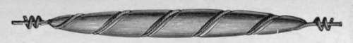
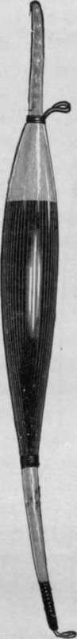
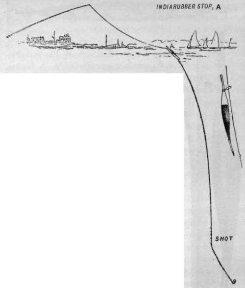
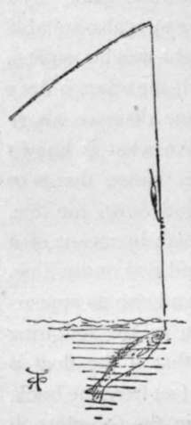

Sea Fishing From Small Boats. Part 8
Description
This section is from the book "Sea Fishing", by John Bickerdyke. Also available from Amazon: Sea Fishing.
Sea Fishing From Small Boats. Part 8
Except where the tidal current is very strong, the ground-bait net which I have described on page 133 should be used.
If there is no current at all, it is a capital plan to throw in fragments of crushed crab, mussel shells, raw potatoes and the like over the spot, so as to fall just where the paternoster is resting on the bottom.
So much, then, for fishing on the bottom from boats. The second method of fishing from what I may term a stationary boat (though I am afraid people with ' feelings' may deem the term somewhat inaccurate) is by means of drift lines. For this purpose the professional fisherman, if he can afford it, uses a long line of twisted horsehair with half-ounce pipe leads placed on it at every two fathoms. Mr. Wilcocks, in the ' Sea Fisherman,' recommends these lines to be made in the following way : By means of a twisting machine short lengths of lines are made, each length containing three strands, and each strand containing from twelve to fourteen hairs. One length should be twisted to the right, and the next length (to which it is knotted) to the left, and so on ; the alternate reverse twists preventing the line untwisting. For obvious reasons the hair should be from a horse, and not from a mare, the best coming from the tail of a young stallion. When twenty-two fathoms of black line have been made, white hair should be used for nine feet, or rather more, with three hairs less in each strand. To the end of the white hair should be fastened two yards of plaited silk, and to this two lengths of double twisted salmon gut. Then comes the hook.
On the black portion of the line, pipe leads (which are threaded on while the lengths are being knotted together) are placed at intervals of two fathoms (twelve feet). The pipe leads are a little barrelled in the middle, and weigh half an ounce or more ; the knots on the line prevent them slipping downwards. Nowadays the hair lines of the tackle-makers are twisted in one length, and no knots are required. The pipe leads are kept in position by means of wooden pegs. It is important to shift the leads occasionally, or the portions of the line which pass through them will soon rot if left wet and covered.
The only advantages that horsehair possesses over hemp or cotton are its elasticity and durability, the former doing good service when the fisherman is playing a large pollack without a rod. The two-strand hemp or cotton lines are also very elastic, but very rough to handle.
It should be unnecessary for me to point out that drift lining can only be pursued in a tideway where there is a sufficient stream to carry out the tackle. Those who go in a good deal for this sort of fishing frequently use five lines from one boat, which must be arranged in the following manner : On each side of the stern two lines with half-ounce leads are let out, and between them one without any leads whatever, the bait of which keeps near the surface by the force of the current. Then there may be two more lines, more heavily leaded than those at the stern, placed on each side of the boat about amidships, and these, of course, will sink to a lower depth than the others. Arranged in this way, three different depths can be fished. Unless the depth is known, it should be ascertained by means of a plumb line or sounding line. One advantage of having light leads placed at a fixed distance of two fathoms from one another is that those who use these lines can tell exactly how many fathoms of line are out and can regulate them accordingly.
It is a good plan, when more than one line is being used, to remove the tholepins and fix in the holes tell-tales, two-foot pieces of those canes commonly known as ' penny canes.' These will project about a foot to eighteen inches above the gunwale, and the spare lines may be fastened to the ends of them. When a fish seizes the bait the cane bends, takes the first pull, and informs the angler of the bite. A little bell is sometimes fastened to the tell-tales.
There is a good deal of this sort of fishing carried on off the coasts of Devonshire, Cornwall, and the Channel Islands, the favourite bait being living sand-eels, contained in peculiar baskets called ' courges,' which are towed behind the boat. This method of drift lining is, of course, hand-line fishing pure and simple, though if the snood is long and fine it is as killing as any newer method. Still, I infinitely prefer to use a rod— either the boat rod already described or one about eleven feet, which is a convenient length for large pollack and bass. It must be strong, but may very well be made of East India cane with a greenheart top. The same line and reel may be used as for paternoster fishing. In fact our old friend the paternoster, with a very slight modification, will answer the purpose very well indeed if fitted with a lead so light that it will be carried out by the current. On the last loop of the paternoster fasten a swivel, and to this swivel attach three or four yards of gut, at the end of it being the hook. When I say 'gut' it must be understood that if the fish run large, the gut must be double or treble and of good quality.
For bass of size salmon gut is necessary. The largest of them may be caught on single salmon gut, provided it is new and sound and there is an abundance of running line on the reel. In the case of big pollack it is absolutely necessary to have tackle strong enough to give them the butt; for these fish have a nasty habit, as I will explain later on, of diving down to the bottom among rocks and seaweed unless they are firmly held. The first rush of a pollack, hooked over a weedy rocky bottom in water of little or moderate depth, must always be restrained. I have nearly had a rod dragged out of my hand by a pollack of only ten pounds ; and even smaller fish have pulled the point of the rod under water.
The weight of the lead on the drift paternoster must depend on the speed of the current. A good average weight would be two ounces, but half a pound or more might be necessary. It is a simple matter to add a few leads to the line if the angler is provided with any like that illustrated, the excellent invention of Mr. A. Jardine, and known as the Archer-Jardine lead. The Norfolk lead, illustrated on p. 259, is also suitable for this purpose. When light weights suffice, large floats can be used ; but if the water is deep and the float has to be at some distance above the lead, it is necessary to have what is known among freshwater anglers as a 'slider,' that is to say, a float which slides up and down the line, but is kept from going too high by means of a little piece of indiarubber band tied on the line. The construction of the float and also its appearance in the water are shown in the following illustrations. It is obvious that if the float is fixed firmly on the line twenty feet from the hook, it will be impossible to reel in the fish close to the side of the boat; for when the float is brought up to the top ring of the rod there will still be twenty feet of line between it and the fish. In such a case, therefore, the sliding float is absolutely necessary, for, as the line is reeled in, it slides down until it rests on the lead. The rod rings should be, of course, large enough to allow the knot and piece of indiarubber to pass freely through them.
Archer-Jardine Lead.
THE SLIDER FLOAT.
Any large-sized float with a hole down the centre can easily be used as a slider. In default of anything better, one of the lumps of cork used to mark crab pots, cut to a decent shape with an old razor or sharp knife, and bored with a red-hot skewer, can be placed on the line. Owing to its size it carries more lead than the float one buys at shops, which is often advantageous.
Diagram Showing The Slider Float In use.

Continue to:
- prev: Sea Fishing From Small Boats. Part 7
- Table of Contents
- next: Sea Fishing From Small Boats. Part 9
Tags
fishing, hooks, bait, fishermen, spanish mackerel, mackerel fishing